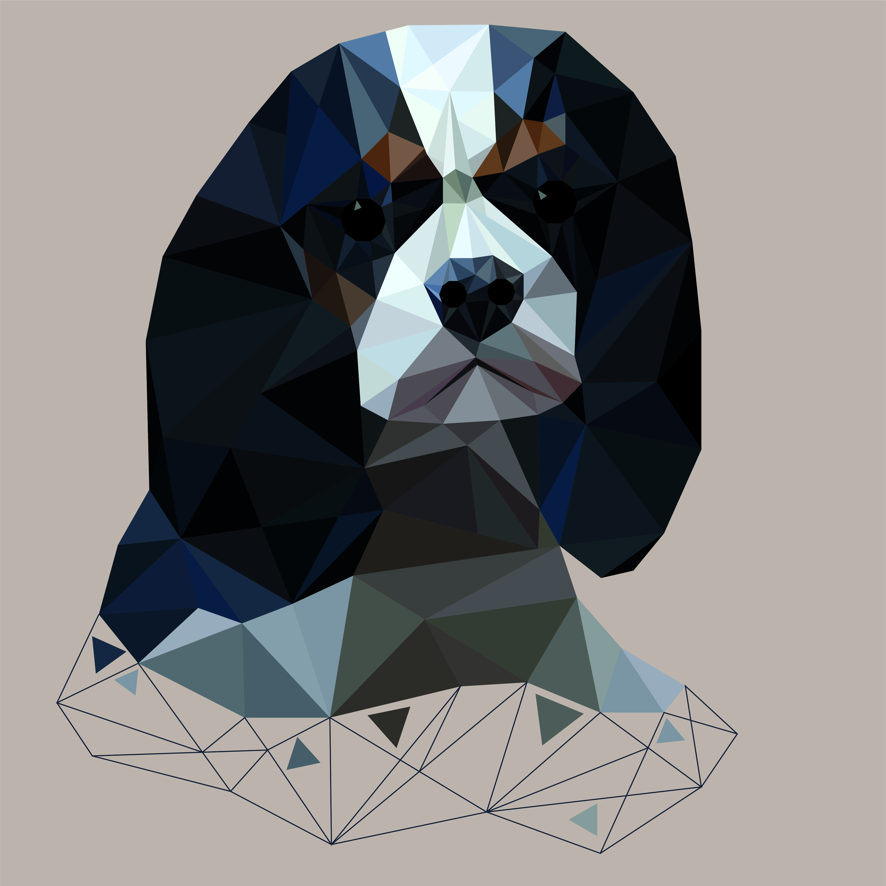
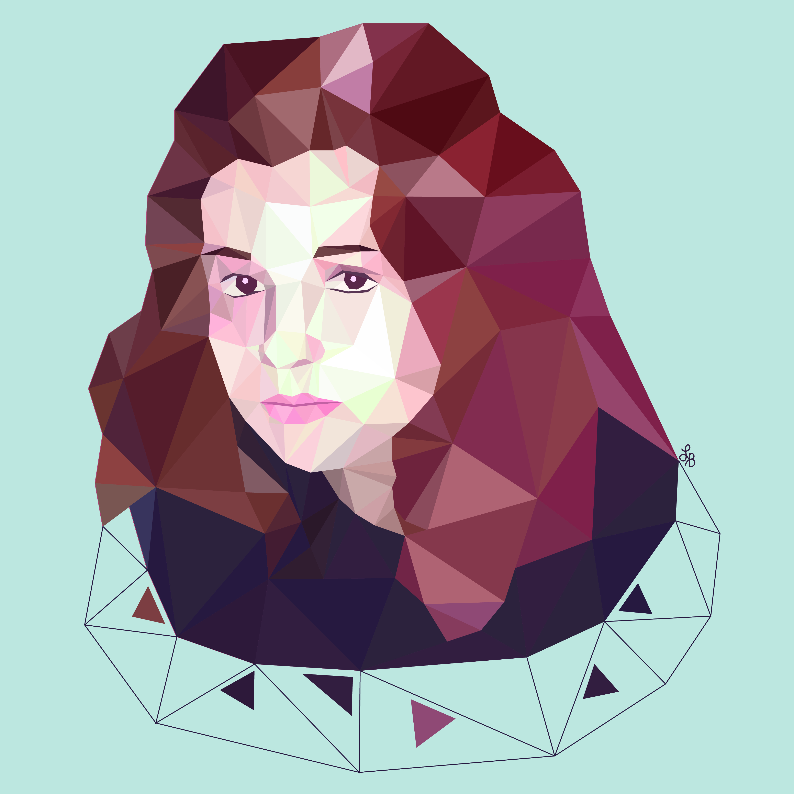
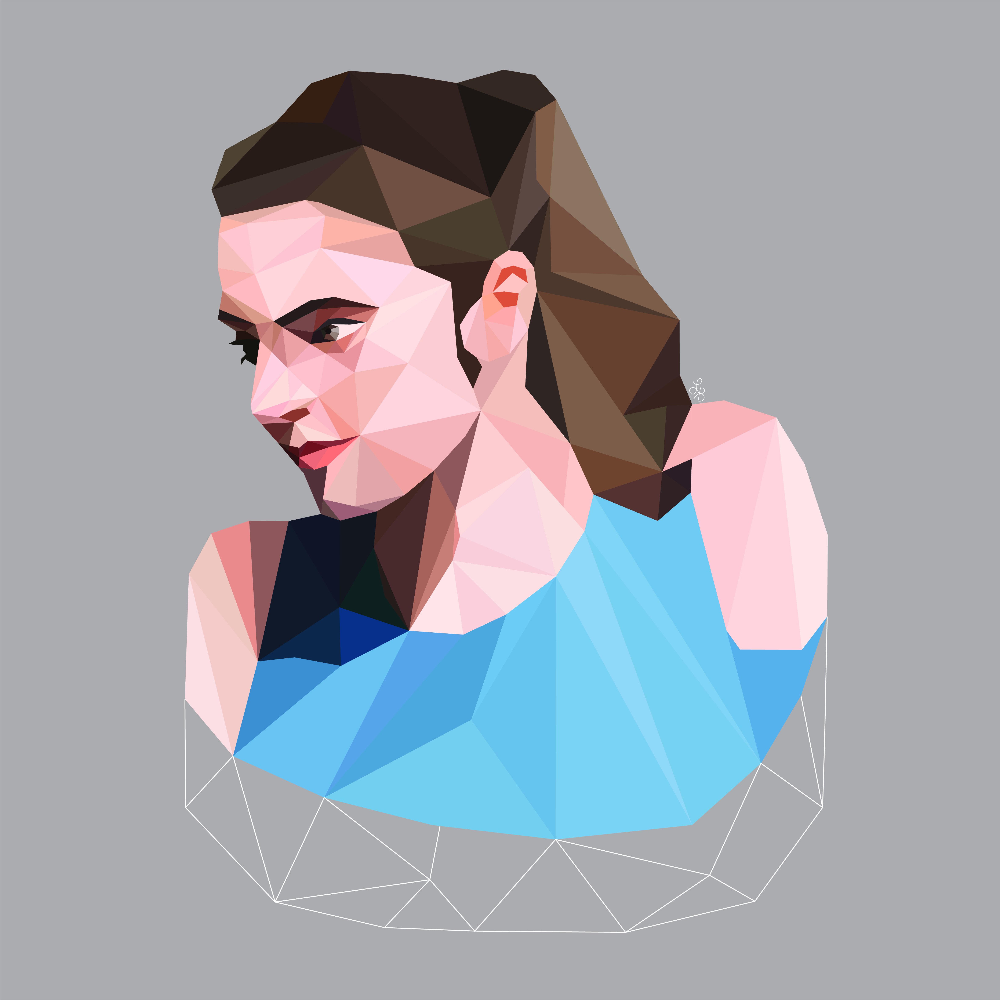

Drawings
Lowpoly




I have recently started to experiment with lowpoly drawings.
It is calming and entertaining, plus you do not have to be
a
professional artist to make neat looking canvas!
If you are
interested in having a customized drawing made,
contact me.